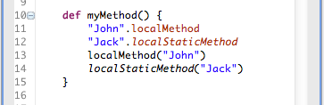

Xtext now supports debugging of DSLs if you generate Java code from your language. It uses Java's Debugging Support for Other Languages (JSR-045) to allow to set breakpoints in your language and step through the implementation. All you need to do is to provide the mapping information between your DSL files and the generated Java code. This will happen automatically if you use the Xbase infrastructure for your language implementation.
The hover for Xbase languages now renders the fully resolved signature of the referenced Java method, constructor or field. Also the JavaDoc is rendered correctly just like Eclipse JDT does it for Java.

Expressions that are built on top of the Xbase library now provide nice syntax coloring to indicate whether a feature call refers to an imported extension function, static or instance methods or fields.
Spell checking is now available for all languages by default. It checks the contents of string literals and comments. You can even use quick fixes to correct spelling mistakes.

The problems view shows more information about the type of a warning or error. All languages now define their own marker types thus they can act independently from each other and show more reliable indicators about available quickfixes.

For languages that utilize Xbase and support the concept of method calls, Xtext does now integrate with the JDT's Call Hierarchy View.

For languages that utilize Xbase and support the concept of inheritance, Xtext does now integrate with the JDT's Type Hierarchy View.

To make the generated Java code even more readable, the compiler can now inline certain operations. As a result the generated Java code is more idiomatic and therefore easier to understand. Also some superfluous statements have been removed to make it more concise.
Fearless arithmetics with big numbers: Xbase now has comprehensive support for number literals. This includes most of the things you can do in Java, and in addition it has first class support for BigDecimal and BigInteger (including overloaded arithmetic operators).
new BigDecimal("6.1").subtract(
new BigDecimal("0.755").multiply(BigDecimal.valueOf(3L)))
In Xbase you can use literals and operators :
6.1bd - 0.755bd * 3bd
Xtend has moved to its own project under the umbrella of eclipse.tools. It now has it's own new & noteworthy document.